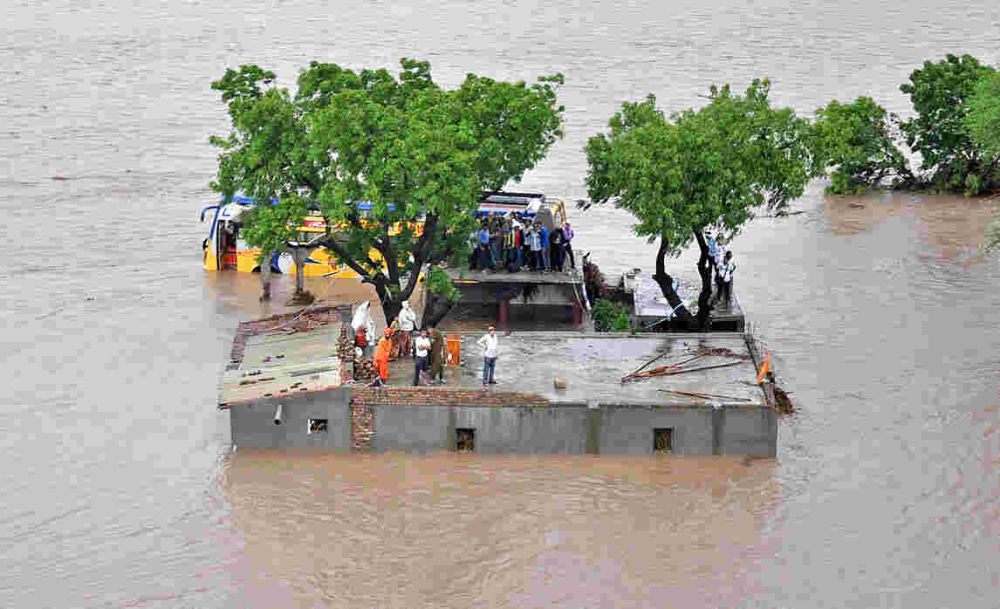
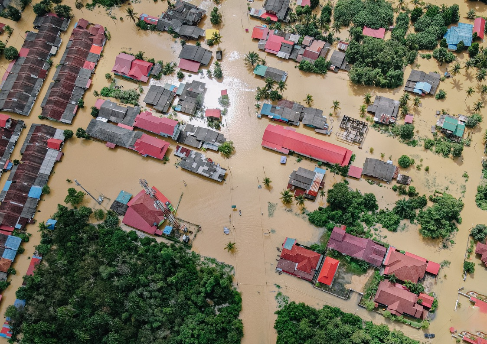
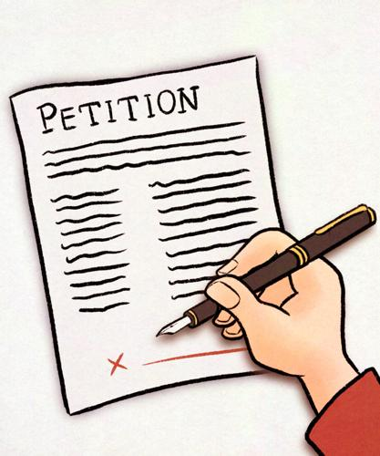

Group Task
I will be raising awareness about the environmental issue flooding

-
I chose flooding as it is a
- -common issue in New Zealand due to global warming.
- -The floods last year impacted many houses and affected the lives of many.
- -Flooding is a process that occurs naturally but due to human activity it has started to happen more often
- -Increase injuries and chances of drowning
- -Damage buildings and infrastructure
- -Impact our economy by distrubing business and agriculture
- Impact wellbeing by evacuating homes and trauma
- -Can ruin water supplies
- -Long term recovery (like what happened with the big earthquake in christchurch)

- -heavy rainfall as the systems used to take out this access water (sewage systems) are overflowed. This access water can come from the ice melting from Mountain ranges in (eg. south island fox glacier) Climate change which has made the rain in NZ unpredictable and causing more rain to happen making more access water  Flood effects
- -Can destroy agriculture (crops, plants etc.) Can destory infrastructure (buildings, shops, houses etc.) Could destroy important transportation routes (e.g. bridge where lots of cars cross through each day) If it destroyed houses it could affect the mental wellbeing of the people living in it 
-
I will do this by
- -educating people about this issue,this could be through social media posts or even writing educated articles. We could also host events that help those affected by the flooding to support and educate people about this problem.
- -petitions to look after the environment (global warming → flooding) etc.
I hope to achieve a world where there are things in place to delegate this problem of flooding. This could happen by building better infrastructure to combat flooding (bettter drainage). We could reduce our carbon footprint (do other things as well) reducing global warming therefore reducing flooding.

The social media part could be carried out anywhere as we are using our phones or devices. Events & petitions could be carried out in school and emails could be sent out to politicians to take it to a deeper level.